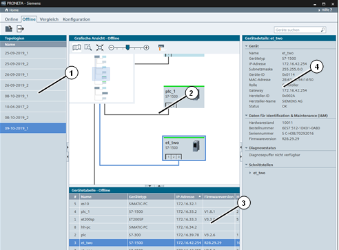
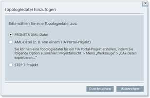
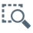

Symbol
Name
Funktion

Topologiedatei hinzufügen
Fügt der Topologieliste eine zuvor gespeicherte Topologie hinzu. list.

Topologie exportieren
Führt einen Topologie-Export auf eine Festplatte durch.
Durch die Netzwerkanalyse von PRONETA Basic erhalten Sie einen schnellen Überblick darüber, welche Geräte in Ihrem PROFINET-Netzwerk installiert sind und darüber, wie diese miteinander verbunden sind. Mit der Netzwerkanalyse können Sie sich ferner verschiedene Netzwerkparameter der Geräte, wie z. B. die IP-Adressen, Gerätenamen usw. ansehen und diese ändern.
Es können verschiedene Netzwerke miteinander verglichen werden und Geräte automatisch oder manuell projektiert werden.
Im Offline-Modus können Sie ein zuvor auf einen PC gespeichertes Referenznetzwerk fast auf die gleiche Weise wie im Online-Modus untersuchen. Wie der Name schon impliziert, liegt der wesentliche Unterschied darin, dass der Offline-Modus strikt auf Lesevorgänge beschränkt ist und niemals Daten auf die Geräte geschrieben werden.

Der Hauptbildschirm ist unterteilt in:
Eine Topologieliste (1) zuvor gespeicherter Referenznetzwerke
Eine grafische Ansicht (2) und
Eine Geräteliste (3) und Gerätedetails (4) wie sie im Online-Modus verwendet werden und die Informationen über Geräte, die in der ausgewählten Topologie gespeichert sind, enthalten.
Funktionsleiste
Über die Funktionsleiste stehen folgende Funktionen zur Verfügung:
|
Symbol |
Name |
Funktion |
|
|
Topologiedatei hinzufügen |
Fügt der Topologieliste eine zuvor gespeicherte Topologie hinzu. list. |
|
|
Topologie exportieren |
Führt einen Topologie-Export auf eine Festplatte durch. |
Topologien können in PRONETA Basic in einem von drei Formaten von einem Datenträger geladen werden:
Als eine XML-Datei, die vorher von PRONETA Basic gespeichert wurde
Als eine AML-Datei die mit TIA Portal erstellt wurde
Als STEP 7-Projekt (Versionen 5.4, 5.5 oder 5.6)

Wählen Sie den Topologiedateityp im Dialog „Topologiedatei hinzufügen“ und klicken Sie auf „Durchsuchen“, um auf einem Datenträger nach der entsprechenden Topologie zu suchen.
Beachten Sie bei der Verwendung von AML-Dateien:
|
HINWEIS |
Augenblicklich (TIA Portal V15.1) erfolgt nur ein eingeschränkter AML-Export aus dem TIA Portal heraus.
|
Topologieliste
In diesem Fenster wird eine Liste gespeicherter Netzwerktopologien angezeigt. Mit Hilfe der Befehle in der Funktionsleiste können Sie weitere Topologien hinzufügen.
Um einen Eintrag zu entfernen, klicken Sie mit der rechten Maustaste in die Liste und verwenden Sie den Befehl „Datei entfernen“.
Durch Auswählen eines Eintrags aus der Liste wird diese Topologie in der grafischen Ansicht angezeigt.
Grafische Ansicht
Die grafische Ansicht ist eine grafische Darstellung des PROFINET-Netzwerks. Nähere Informationen zu ihrer Bedienung finden sie unter Grafische Ansicht im Online-Modus.
Durch Klicken mit der rechten Maustaste auf ein Gerät in der grafischen Ansicht oder in der Gerätetabelle öffnet sich das Geräte-Kontextmenü.
Symbolleiste
Im oberen Bereich der grafischen Ansicht befindet sich eine Symbolleiste mit einer Reihe von Funktionssymbolen:
|
Symbol |
Name |
Funktion |
|
|
Topologieübersicht zeigen |
Schaltet eine Topologieübersicht in der Online-Ansicht um. (Siehe Topologieübersicht) |
|
 |
Zoomauswahl |
Ermöglicht das Aufziehen eines Rechtecks innerhalb der grafischen Ansicht. Sobald Sie die Maustaste loslassen, wird so in die Ansicht gezoomt, dass nur der Bereich innerhalb des Rechtecks sichtbar ist. |
|
|
Vergrößerung an Bildschirm anpassen |
Zoomt so zurück, dass wieder alle Netzwerkteilnehmer in der Ansicht sichtbar sind. |
|
|
Zoomleiste |
Zoomt in das Netzwerk oder zurück durch Ziehen des Reglers nach rechts bzw. links oder aber durch Klicken auf „-“ bzw. „+“. (Sie können auch in die und aus der grafischen Ansicht zoomen, indem Sie die Maus über die Ansicht bewegen und das Scrollrad verwenden.) |
|
|
Physikalische Verbindungstypen anzeigen |
Zeigt die verwendeten Übertragungsmedien in unterschiedlichen Farben an. (Siehe Geräteverbindungsarten ) |